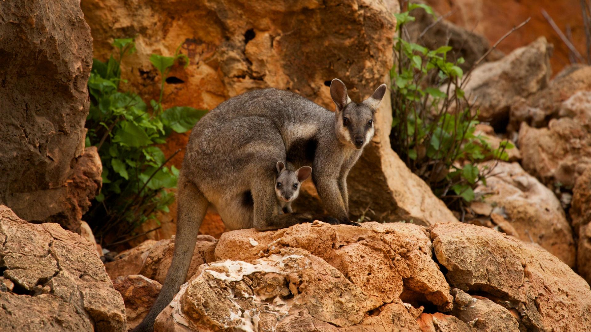
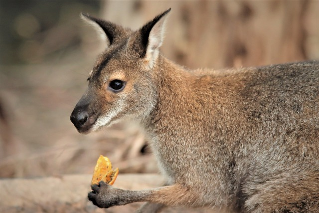
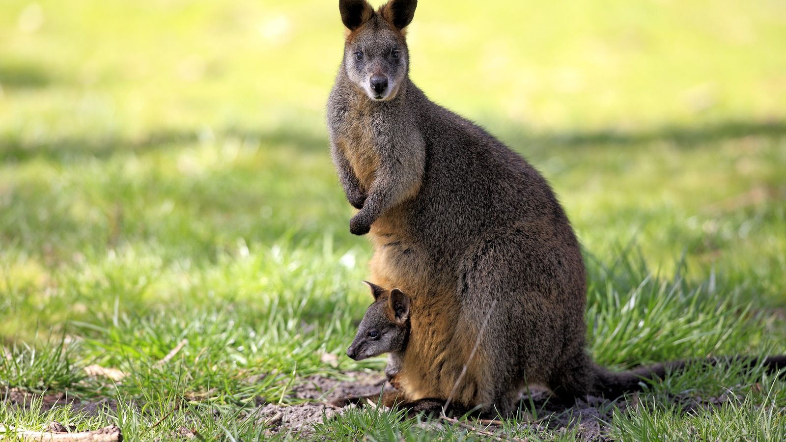
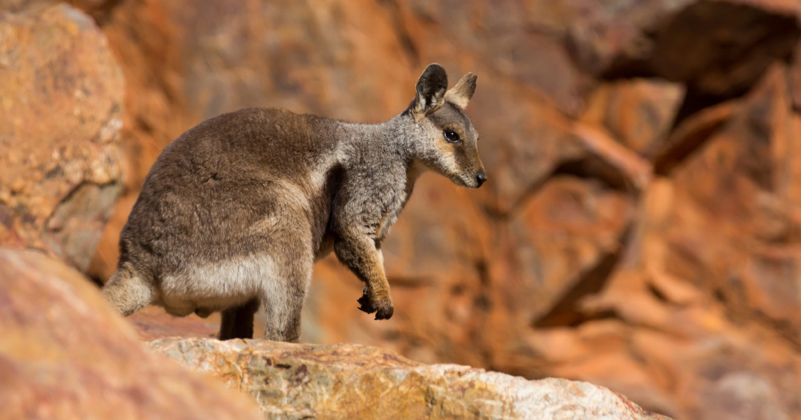
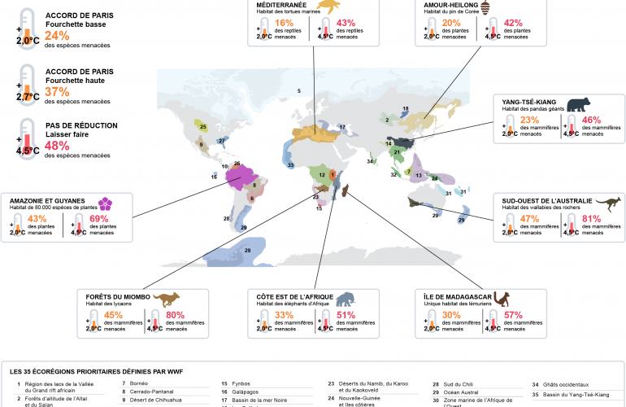

Le groupe de Wallabies des rochers est généralement composé de femelles et leurs petits, d’un seul mâle dominant et de plusieurs autres mâles sous-dominants. Les différents groupes vivent souvent très éloignés les uns des autres. Les mâles respectent une hiérarchie stricte, les plus grands et les plus forts occupant le premier rang. Chez les femelles, les animaux de la même famille partagent souvent leur abri, se protégeant ainsi de la chaleur, de la sécheresse et des rapaces. Animaux très sociaux, les colonies de wallabies peuvent atteindre les 100 individus, mais sont en général composées d’une vingtaine d’individus en moyenne. Les wallabies des rochers se réfugient la journée dans des grottes fraîches et sont plutôt actifs la nuit. Ils vivent en moyenne 10 à 11 ans.

Les wallabies des rochers se nourrissent exclusivement de plantes. Ils apprécient surtout l’herbe, mais ils mettent volontiers à leur menu d’autres espèces végétales, des feuilles et des fruits. En cas de nécessité, ils peuvent même se contenter d’écorces et de racines.

C’est l’un des Marsupiaux avec la durée de gestation la plus courte. Après l'accouplement, la femelle connaît une gestation d'un mois puis le petit gagne la poche marsupiale de sa mère où il va s'allaiter et finir sa croissance. La femelle peut se reproduire immédiatement après la mise bas. Les jeunes restent environ 6 mois dans la poche, il est possible pour la mère d’avoir 2 petits d’un âge différent en même temps dans la poche. La mère est donc capable d’avoir un lait différent dans chacune de ses 2 tétines, selon l’âge et les besoins de ses jeunes.

| espèce | population | statue |
|---|---|---|
| le wallaby des rochers d'Australie occidentale | environ 8 000 | Vulnérable |
| le wallaby des rochers penicillata | environ 20 000 | Vulnérable |
| wallaby des rochers à queue annelée | pas d'estimation | Quasi menacé |

